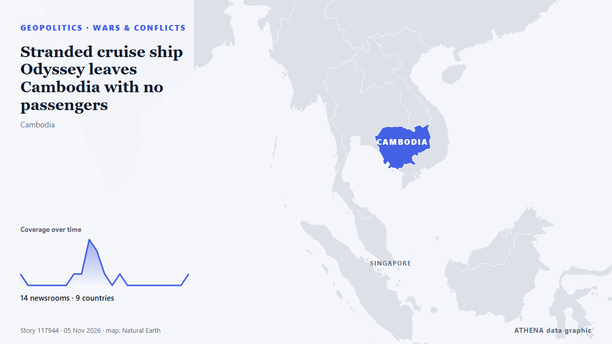

الحروب والنزاعات
برعايةبرعاية  Cybernetics and Artificial Intelligence Lab Welcome to the Cybernetics and Artificial Intelligence Laboratory, established at the Department of Business Administration of the National and Kapodistrian University of Athens. The lab is headed by Professor Dimitrios Thomakos. The lab aims to do research that can be published in top venues. Our research uses tools and methods of Artificial Intelligence, and lies in the following areas: - Forecasting - Decision making - Cyber security - Finance We are always looking forward to collaborating with exceptional students!
Cybernetics and Artificial Intelligence Lab Welcome to the Cybernetics and Artificial Intelligence Laboratory, established at the Department of Business Administration of the National and Kapodistrian University of Athens. The lab is headed by Professor Dimitrios Thomakos. The lab aims to do research that can be published in top venues. Our research uses tools and methods of Artificial Intelligence, and lies in the following areas: - Forecasting - Decision making - Cyber security - Finance We are always looking forward to collaborating with exceptional students!
| 24 أكتوبر | 0 |
|---|---|
| 25 أكتوبر | 0 |
| 26 أكتوبر | 0 |
| 27 أكتوبر | 0 |
| 28 أكتوبر | 0 |
| 29 أكتوبر | 0 |
| 30 أكتوبر | 0 |
| 31 أكتوبر | 2 |
| 1 نوفمبر | 0 |
| 2 نوفمبر | 6 |
| 3 نوفمبر | 11 |
| 4 نوفمبر | 4 |
| 5 نوفمبر | 1 |
| 6 نوفمبر | 0 |
تُعرض العناوين بالإنجليزية كما نُشرت.

Stranded cruise ship Odyssey leaves Cambodia with no passengers
A U.S. cruise ship that suspended its operations in Cambodia has left with only crew aboard, according to Cambodian officials. من ABC News (International)
Asia hopes Democrats can provide relief from Trump's Iran war, tariffs
ASIAN nations that have borne the brunt of the US-Israeli war on Iran and US President Donald Trump’s trade tariffs are hopeful that Democrats will be able to temper his most harmful policies. من New Straits Times
Dozens dead and missing after Russian strike on Ukrainian aid centre, officials say
Nov 4 - The death toll from a Russian bombing of an aid distribution point in Ukraine's southeastern Zaporizhzhia region on Monday has risen to 37, with dozens missing, officials said, in one of the… من The Straits Times
Drone attack sparks fire at Ozon logistics centre in Russia’s Adygea
A fire broke out at an Ozon logistics centre in the city of Adygeysk, in Russia’s Republic of Adygea, following a drone attack. من AzerNews
French judges probe war crimes complaint against Israeli army in Lebanon
France has opened a judicial investigation into a war crimes complaint over an Israeli strike on a residential building in Lebanon in 2024, lawyer Clemence Bectarte told AFP on Tuesday. من Naharnet
Russia hits power stations in Ukraine’s regions of Kyiv
Russia has hit two power stations in Ukraine’s regions of Kyiv and Zhytomyr, the Russian defence ministry said on Telegram on Wednesday, keeping up nearly daily strikes on its neighbour’s energy… من Cyprus Mail
Russian strikes disrupt water and power in Kyiv
KYIV, Ukraine, Nov 4, (AP): Overnight attacks on critical infrastructure triggered power and water outages across Kyiv and surrounding regions Wednesday as rescuers combed throug... من Arab Times
Russian strike on Kharkiv hospital raises injury toll to 73
In Kharkiv, 73 people were injured as a result of a Russian attack on the night of November 3. من Ukrinform (English)
Indian seafarer killed in attack off Oman; 13 crew rescued from Al Jusufi
Union shipping minister Sarbananda Sonowal confirmed the death of seafarer Gandhar Nahim Ajij of Gujarat. من Hindustan Times
North Korea launches unidentified projectile toward the sea, South Korea says
South Korea says North Korea has launched an unidentified projectile toward the sea. من ABC News (International)
2,800 troops to join first Ukraine support force exercise in Poland
The drill will simulate moving troops and supplies such as food and fuel, and was agreed at a Coalition of the Willing summit in July. من The Independent
Iran warns new war could last longer after Trump threatens strikes
Diplomatic efforts to end the Middle East war have been punctuated by repeated threats from the United States and Israel to resume bombardments as they hold crucial elections. من Channels TV
US strikes Iran’s Qeshm island – Report
The US has not publicly announced the attacks, so as not to signal any intention of resuming major combat operations, the Wall Street Journal reported. من CNA (Channel NewsAsia)
Iran Speaker: Ball in US court to prevent war
Shafaq News- Tehran Iran has delivered a "strong and rational response" to Washington, and the ball is now in the United States' court to prevent war, Parliament Speaker Mohammad Bagher Ghalibaf said… من Shafaq News (English)
Death toll hits 29 after Russian strike on Ukrainian aid site, with 48 still missing
Russia launched 289 attack drones, 17 ballistic missiles and 59 cruise missiles across nine regions, President Zelenskyy said in an online post that noted the barrage coincided with U.S. elections. من NPR
Pezeshkian says return to war benefits ‘no one’
TEHRAN: Iran's president Masoud Pezeshkian said on Tuesday that a return to war would benefit "no one", hours after reported US strikes on an Iranian island in the Strait of Hormuz... من Oman Observer
War widens in the Black Sea in a test of NATO red lines
LONDON/BUCHAREST, Nov 3 - After seven strikes on cargo ships near NATO members Romania and Bulgaria last month, the US-led military alliance said it would deploy maritime patrol aircraft, radars and… من The Straits Times
Iran-US deal still out of reach despite heightened diplomatic efforts
Iran and the United States are far from reaching a deal to end the war, a senior Iranian official told Reuters on Tuesday, despite heightened diplomatic efforts to prevent a potential return to… من Arab News
Putin orders private data centres to set aside 10% of capacity to support IT infrastructure
Russian data centers have become targets of Ukrainian drone attacks in recent weeks. من The Moscow Times